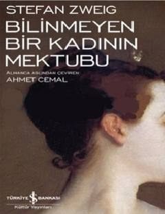

BBNoma'lum ayolning o'limi oldidan yozgan fojiali muhabbat va iztirob maktubi.
Stefan Zweig qalamiga mansub ushbu mashhur asar noma'lum ayolning o'limi oldidan o'zining yashirin sevgilisi — taniqli yozuvchiga yozgan yurak yutug'i va fojiali hayot hikoyasidan iborat. Maktub davomida inson qalbining tuban va yuksak jihatlari, bir tomonlama sevgi iztiroblari chuqur psixologik tahlil qilinadi.